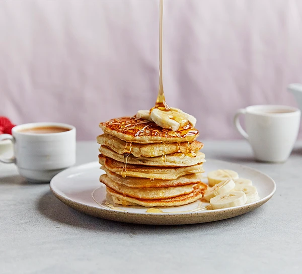

Fluffy American Pancake

Description
Fluffy American-style pancakes are a blank canvas for toppings like blueberries and bacon;
great for breakfast in bed. Why not get the kids to help?
Ingredients
- 8 slices pancetta, to serve (optional)
- sunflower oil and butter, for cooking
- blueberries, to serve (optional)
For the pancakes
- 300g self-raising flour
- 1 tsp baking powder
- 1 tbsp caster sugar
- 2 medium eggs
- 1 tbsp maple syrup, plus extra to serve
- 300ml milk
Steps
- If serving with pancetta, heat oven to 200C/180C fan/gas 6. Line a baking tray with baking parchment and lay on the pancetta in a single layer. Put another piece of parchment on top, followed by a second baking tray, and bake for 12-15 mins until crisp.
- To make the pancakes, get a little helper to weigh out and tip the flour, baking powder and sugar into a large bowl with a small pinch of salt. Crack in the eggs and whisk until smooth. Add the maple syrup and milk while whisking.
- Heat a splash of oil and a small knob of butter in a non-stick frying pan until sizzling. Add spoonfuls of batter to make pancakes the size you like, we made 20cm pancakes for a serving size of one per person, or if you are very hungry, two per person. Cook until bubbles start to form on the surface, then flip and cook the other side. Eat straight away or keep warm in a low oven while you cook another batch. Serve pancakes with pancetta or blueberries, drizzled with extra maple syrup.